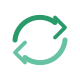

Мой экологичный образ жизни
Простые привычки, которые помогают уменьшить след на планете и жить здоровее.
Приветствие
Привет! Рада видеть вас здесь — забота об окружающей среде начинается с простых действий.
Экологичные привычки помогают экономить ресурсы, улучшать здоровье и поддерживать устойчивое будущее. Эта страница — набор моих практик и идей, которые можно внедрить прямо сейчас.
О проекте
Этот сайт создан как практический путеводитель по простым и проверенным способам уменьшить экологический след. Здесь собраны советы по сокращению отходов, экономному использованию энергии, осознанному потреблению и выбору транспорта. Все рекомендации основаны на личном опыте и общедоступных ресурсах.
Цель — дать понятные шаги: от планирования покупок до внедрения привычек по переработке и повторному использованию вещей. Материалы подходят для тех, кто только начинает, и для тех, кто хочет систематизировать уже существующие практики.
Полезные привычки
-
Планируйте покупки
Составляйте список — меньше импульсивных покупок, меньше упаковки и отходов.
-

Используйте повторно
Многоразовые сумки и бутылки сокращают количество пластика в природе.
-
Экономьте энергию
Выключайте свет и электроприборы, используйте энергосберегающие лампы и бытовую технику.